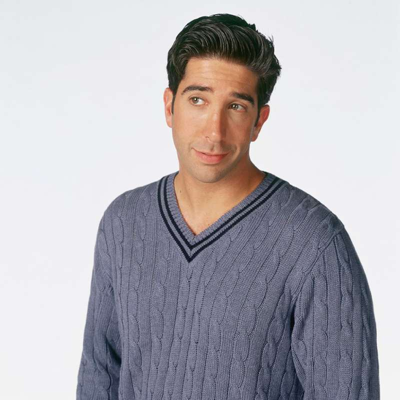
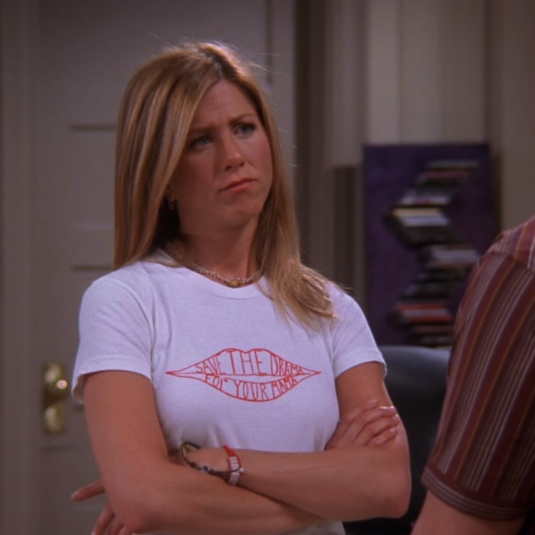
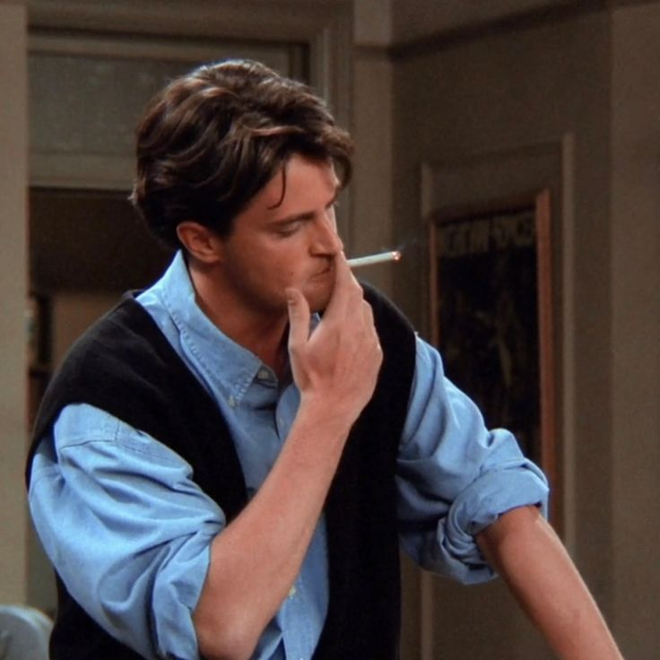
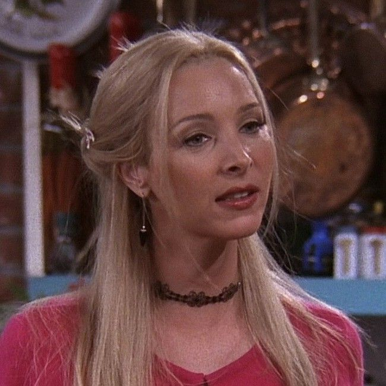
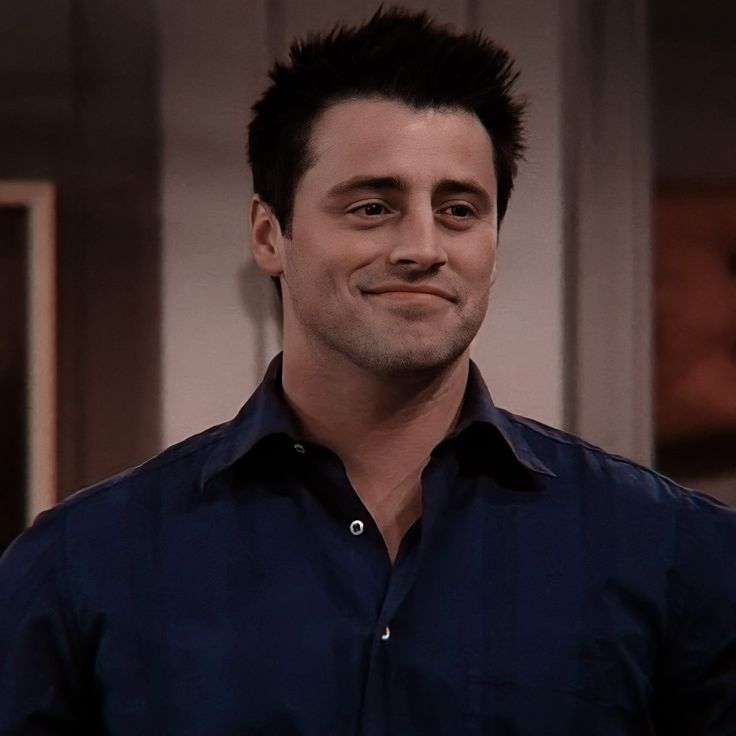
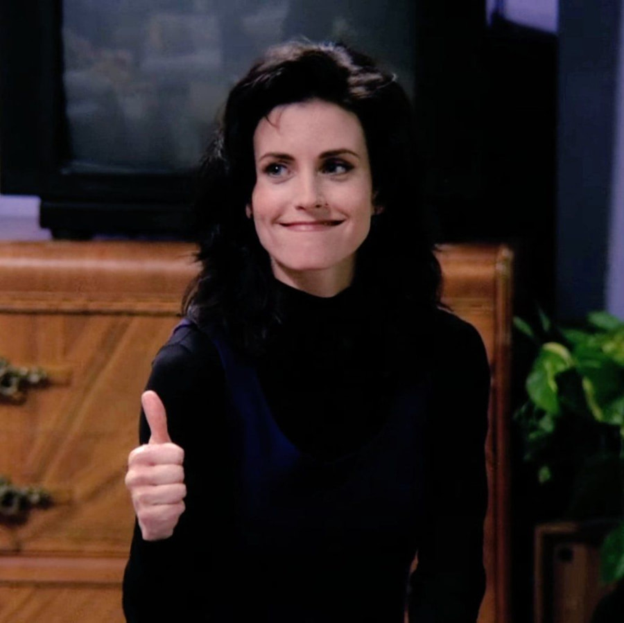

-
Ross Geller - Ross, o Divorciador

Ross Geller é o paleontólogo mais azarado do mundo: três divórcios, um amor eterno por Rachel e um talento especial para gafes sociais. Ele é o tipo de cara que pode te explicar a evolução dos dinossauros, mas ainda vai gritar "WE WERE ON A BREAK!" em qualquer discussão. Com seu charme nerd e danças desajeitadas, Ross é a prova viva de que até os mais inteligentes podem ser completamente desastrosos no amor.
Dr. Monkey / Ross-a-Tron / -
Rachel Karen Greene - Sra. Geller

Rachel Greene é a rainha do drama que fugiu do altar e caiu de paraquedas na vida adulta, sem saber usar uma máquina de café ou pagar contas. De garota mimada a guru da moda, ela tropeça no amor (e no Central Perk) enquanto tenta decidir se está ou não "on a break" com Ross. Ah, e o cabelo dela? Um ícone dos anos 90 que ainda vive na cabeça de muita gente... literalmente!
Rach / Raquela / -
Chandler Muriel Bing - Mr. Big

Chandler Bing é o rei do sarcasmo e das piadas que ninguém pediu, mas que todo mundo secretamente adora. Ele trabalha com... bem, ninguém sabe exatamente, nem ele. Especialista em fugir de emoções e compromissos (até Monica aparecer), Chandler é aquele amigo que resolve problemas com humor e um leve toque de autodepreciação. Ah, e se você acha que sua dança é ruim, é porque nunca viu ele dançando com uma galinha e um pato.
Miss Chanandler Bong / Toby / -
Phoebe Buffay - Regina Phalange

Phoebe Buffay é a alma livre e excêntrica do grupo, com um talento único para transformar qualquer situação em algo surreal. Ela canta músicas inesquecíveis como *"Smelly Cat"* (mesmo que o gato não agrade). Massagista de dia e filósofa peculiar de sempre, Phoebe acredita em auras, vidas passadas e que sua mãe reencarnou como um gato. Meio hippie, meio caos, ela é o tipo de amiga que vai te dar os conselhos mais estranhos... mas que acabam fazendo todo sentido.
Princesa Consuela Bananahammock / Pheebs / -
Joey Tribbiani - Big Daddy

Joey Tribbiani é o ator bonitão e comilão do grupo, cuja filosofia de vida pode ser resumida em duas regras: "Joey doesn't share food!" e "How you doin'?" Ele pode não ser o mais esperto, mas compensa com um coração enorme, um apetite insaciável e um talento inegável para esquecer falas. Entre audições desastrosas e romances fracassados, Joey é o amigo que sempre estará lá para você – desde que você não toque no sanduíche dele!
Joe / Drake Ramoray / -
Mônica Geller - Mon

Monica Geller é a chefe de cozinha obcecada por limpeza e organização, que transforma qualquer encontro casual em uma competição acirrada (e ela *sempre* joga para ganhar). Irmã de Ross e mãe substituta do grupo, Monica é a anfitriã oficial, garantindo que ninguém passe fome – mas cuidado, porque bagunçar a cozinha dela é praticamente um crime! Com seu coração gigante e um leve toque de neurose, ela prova que ser mandona pode ser uma qualidade adorável... na maioria das vezes.
Monica Geller-Hyphen-Bing / Monicow /